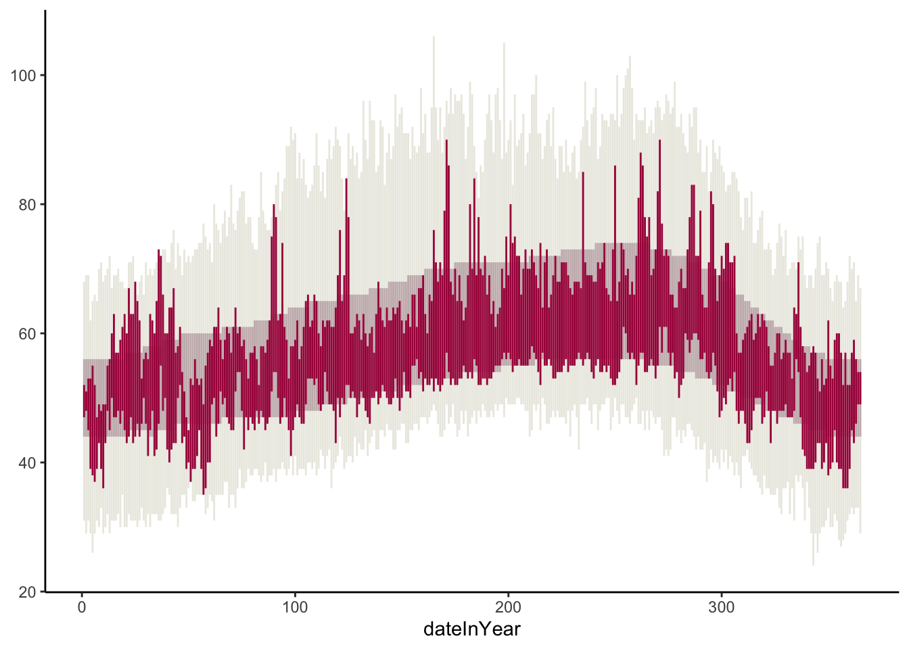
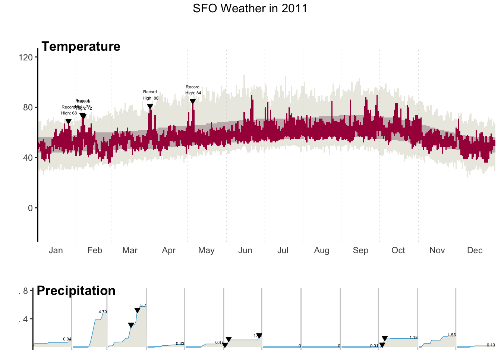

Response
Insert solution here.After this lesson, you should be able to:
data arguments within the ggplot() and geom_() layersWe are going to recreate this NYT visualization on record setting temperatures by expanding our ggplot2 toolbox using data from SFO in 2011.

Class exercise 1: Examine the temperature visualization. What variables underlie the visualization, and how do they map to visual elements (e.g., position, size, shape, and color of the glyphs)?
Insert solution here.We can explore the “Geoms” section of the ggplot2 reference page to find a geom that corresponds to the visual elements in the temperature plot.
Class exercise 2: Using both the small example visuals on the right and the names of the geom’s, brainstorm some possibilities for geom’s we might use to recreate the temperature visualization.
We need to explore further by opening up the geom reference pages to understand if a particular geom is suitable for our task. We’ll look at the following:
When looking at a help page, it is useful to first look at the Usage and Arguments sections.
The Usage section shows all of the possible inputs (arguments) to the geom–these are all of the ways that a geom can be customized.
The Arguments section explains what each of these arguments does and the possible values they can take.
data(diamonds)
ggplot(diamonds, aes(cut)) +
geom_bar()
ggplot() +
geom_bar(mapping = aes(cut), data = diamonds)
ggplot() +
geom_bar(aes(cut), diamonds)TODO: THE FOLLOWING INSTRUCTIONS ARE NOT CLEAR; I’M NOT SURE WHAT YOU WANT THEM TO DO. AND WHAT THE CLASS QMD DOCUMENT IS.
Go through the full thought process for this part in the class QMD document, recording all intermediate plots and the decision making leading to the next iteration. Also discuss alt text in code chunk options.
weather <- read_csv("sfo_weather.csv")Rows: 365 Columns: 19
── Column specification ────────────────────────────────────────────────────────
Delimiter: ","
chr (1): RecordText
dbl (15): Month, Day, Low, High, NormalLow, NormalHigh, RecordLow, LowYr, R...
lgl (2): Record, RecordP
date (1): date
ℹ Use `spec()` to retrieve the full column specification for this data.
ℹ Specify the column types or set `show_col_types = FALSE` to quiet this message.ggplot(weather, aes(x = dateInYear)) +
geom_linerange(aes(ymin = RecordLow, ymax = RecordHigh), color = "#ECEBE3") +
geom_linerange(aes(ymin = NormalLow, ymax = NormalHigh), color = "#C8B8BA") +
geom_linerange(aes(ymin = Low, ymax = High), color = "#A90248") +
theme_classic()
In pairs, you will go through the same steps as above for the precipitation data.
Throughout this course, we will be using the pair programming technique. Using one computer, work together to solve the problem at hand with each individual taking turns in one of the two roles:
TODO: Include information on driver and navigator responsibilities–link to video to watch in class?
Pair programming is used effectively in industry to speed up individual employee’s learning of a company’s codebase and reduce time wasted on fixing bugs.
As you pair program, be aware of your comforts and discomforts in the roles of driver and navigator. Pay attention to the comforts and discomforts of your partner. What could you do to support them in becoming more comfortable and confident in both roles?
TODO: This is not clear: Remember to run into a new error!
Using ggplot2 and other functions in R, recreate the original NY Times graphic to the greatest extent possible for you (which may be different for each of you). You will need to use reference pages and documentation to discover necessary tools. For example, you may want to Google search “ggplot multiple plots”. Look at dates and use newer references. There will many tools that you could use.
At a minimum, attempt to create a graphic close to this:
